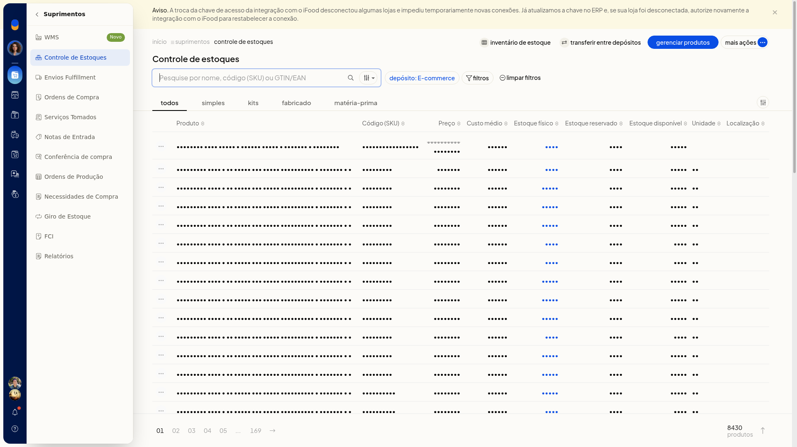
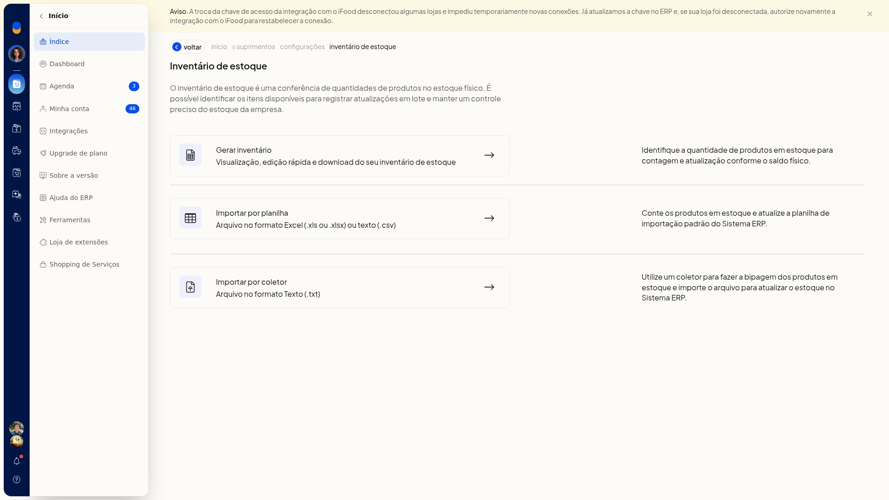
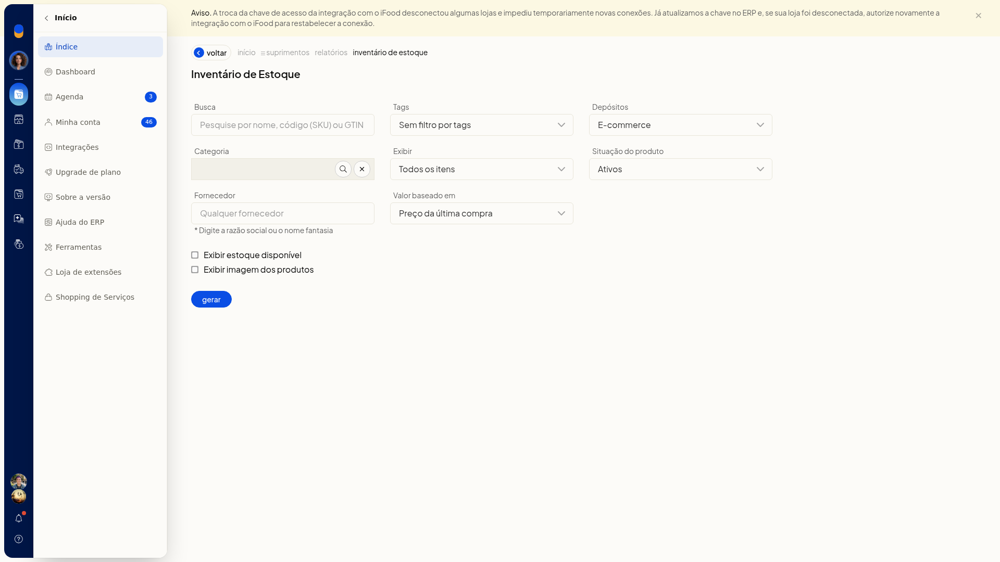
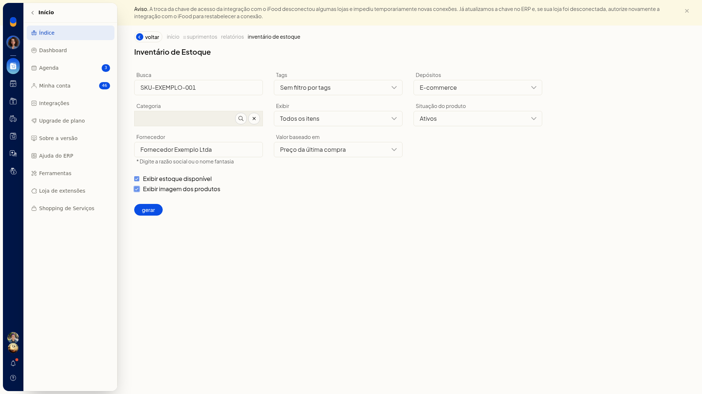
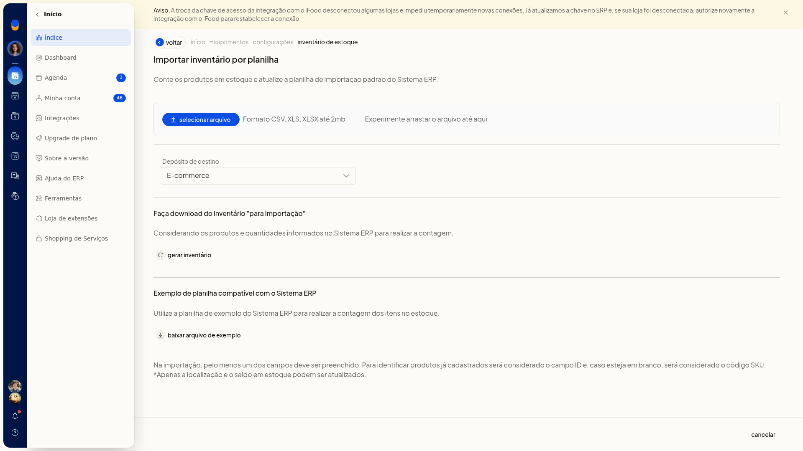
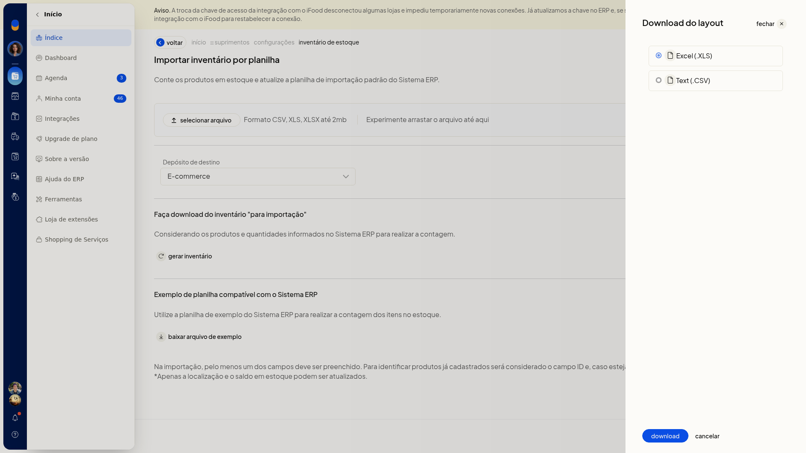
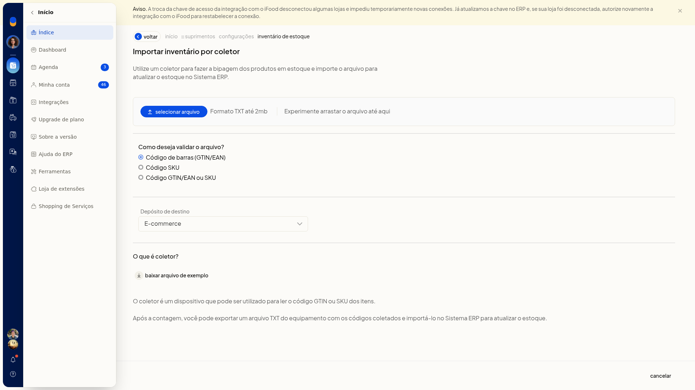

Inventário e balanço de estoque
Pré-requisitos
- Ter depósitos já cadastrados: o seletor lista os depósitos da conta.
- Para importar a contagem, ter o arquivo no formato aceito pela tela. O layout de exemplo pode ser baixado antes do envio.
Importante
- Na importação por planilha, o arquivo aceito é CSV, XLS ou XLSX de até 2 MB. O produto é identificado por ID ou SKU, e só localização e saldo podem ser atualizados.
- Na importação por coletor, o arquivo aceito é TXT de até 2 MB.
- Para filtrar o inventário por fornecedor ou categoria, o cadastro correspondente já precisa existir: os dois campos buscam cadastro, não aceitam texto livre.
Instruções
Pela tela
-
Acesse Suprimentos > Controle de Estoques.


-
Clique em Inventário de estoque. O mesmo item também aparece em Mais ações.


-
Escolha Gerar inventário (visualização, edição rápida e download).

-
Preencha os filtros. Nenhum deles é obrigatório.
Quem entra na lista
- Busca: localiza o produto.
- Tags: lista de tags. Sem filtro, a opção é Sem filtro por tags.
- Depósitos: lista dos depósitos cadastrados.
- Categoria: busca em categorias já cadastradas.
- Fornecedor: busca por razão social ou nome fantasia de um fornecedor já cadastrado.
- Situação do produto: Ativos, Inativos ou Todos exceto excluídos.
O que a visão mostra
- Exibir: Todos os itens, Itens com saldo em estoque ou Itens sem saldo em estoque.
- Valor baseado em: Preço da última compra, Preço de custo atual, Preço de custo médio atual ou Preço de venda atual.
- Exibir estoque disponível: marque para incluir o estoque disponível.
- Exibir imagem dos produtos: marque para incluir a imagem dos produtos.

- Clique em Gerar. O inventário filtrado fica pronto para visualização, edição rápida e download.
Por planilha
-
Em Inventário de estoque, escolha Importar por planilha.

-
Clique em baixar arquivo de exemplo.
-
No modal Download do layout, escolha Excel (.XLS) ou Text (.CSV).

-
Selecione o Depósito de destino.
-
Indique o arquivo CSV, XLS ou XLSX de até 2 MB.
-
Clique em gerar inventário. A planilha atualiza localização e saldo dos produtos desse depósito.
Por coletor
-
Em Inventário de estoque, escolha Importar por coletor.

-
Em Como deseja validar o arquivo?, escolha Código de barras (GTIN/EAN), Código SKU ou Código GTIN/EAN ou SKU.
-
Para ver o layout, clique em baixar arquivo de exemplo. O TXT traz um código de barras por linha.
-
Selecione o Depósito de destino e indique o arquivo TXT de até 2 MB. A contagem do coletor entra nesse depósito, validada por GTIN/EAN, SKU ou ambos.
Resultado
Em Controle de Estoques, a grade mostra o saldo do depósito selecionado, com busca, abas de tipo e as colunas de estoque físico, reservado e disponível. Em Inventário de estoque, os três caminhos ficam disponíveis: gerar a visão, importar a planilha ou importar o coletor.
Informações adicionais
O que a lista de saldos mostra
A lista usa as abas Todos, Simples, Kits, Fabricado e Matéria-prima. As colunas visíveis são Produto, Código (SKU), Preço, Custo médio, Estoque físico, Estoque reservado, Estoque disponível, Unidade e Localização.